Häufig treten in den Anwendungen Bildfunktionen der Form F(p) = H(p)/G(p) auf, wobei G(p) ein Polynom in p darstellt. Hat man die Originalfunktionen zu H(p) und 1/G(p) gefunden, dann erhält man die gesuchten Originalfunktionen zu F(p) durch Anwendung des Faltungssatzes.
2. Einfache reelle Nullstellen von G(p):
Hat die Bildfunktion 1/G(p) nur einfache Pole 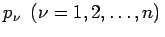, dann gilt für sie die Partialbruchzerlegung
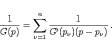
(15.39)
Daher lautet die zugehörige Originalfunktion
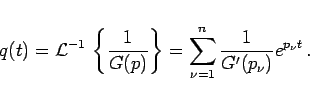
(15.40)
3. Heavysidescher Entwicklungssatz:
Ist die Zählerfunktion H(p) ebenfalls ein Polynom von , aber von niedrigerem Grade als 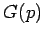, dann erhält man die Originalfunktion zu F(p) mit Hilfe der nach HEAVYSIDE benannten Formel
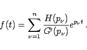
(15.41)
4. Komplexe Nullstellen:
Treten komplexe Wurzeln im Nenner auf, dann kann man den HEAVYSIDEschen Entwicklungssatz in der gleichen Weise anwenden. Man kann auch jeweils konjugiert komplexe Glieder, die im Falle komplexer Nullstellen stets vorhanden sein müssen, zu einem quadratischen Ausdruck zusammenfassen, dessen Rücktransformation wie auch im Falle mehrfacher Nullstellen von G(p) mit Hilfe der Tabelle der Korrespondenzen durchgeführt werden kann.
Beispiel
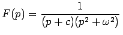, d.h. 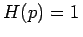, 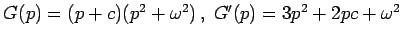.
Die Pole 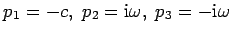 sind sämtlich einfach. Nach dem HEAVISIDEschen Satz erhält man 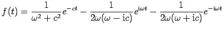
oder durch Partialbruchzerlegung und Korrespondenztafel 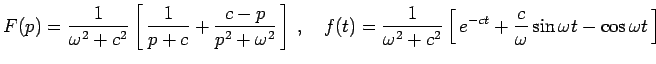.
Die beiden Ausdrücke für f(t) sind identisch.